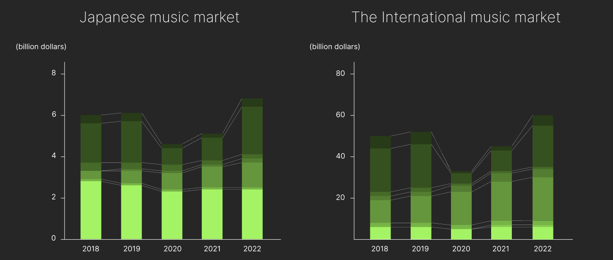
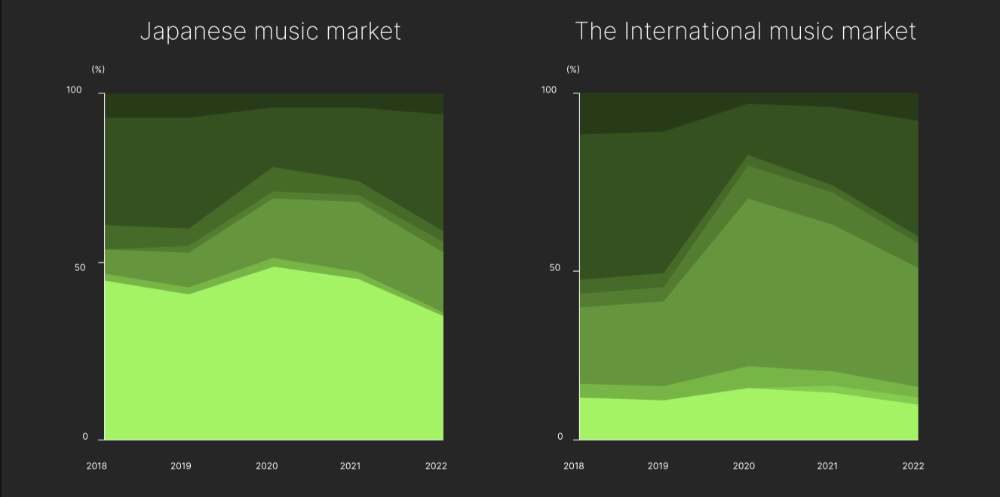
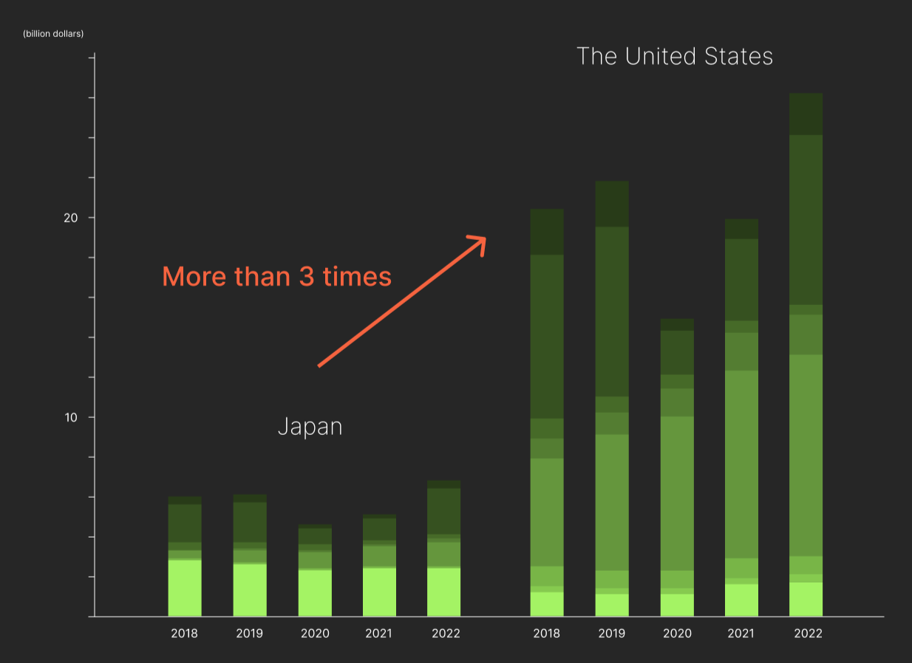

日本と海外の音楽市場の比較 Comparison between Japan and the United States

日本と海外の音楽市場の比較 Comparison between Japan and the United States
........................ Japan will remain the world's second largest music market in 2023, thanks to its strength in physical media and unique music consumption culture. In particular, sales are driven by fans' desire to purchase CDs, due to the still-deep idol culture. In addition, Japanese listeners are relatively uninterested in overseas music, and their support for domestic artists is a major factor in maintaining this position. Although streaming is gradually becoming an important source of income, the growth of the domestic market is showing limitations amid a declining and aging population. Therefore, the biggest challenge for the Japanese music industry in the future will be how to attract global listeners.
市場規模 Music market size
収入源における割合 The proportion of sources of income
In the Japanese music market, physical discs amount for nearly half of the sources of income.
日本と米国の比較 Comparison between Japan and the United States
........................ Japan will remain the world's second largest music market in 2023, thanks to its strength in physical media and unique music consumption culture. In particular, sales are driven by fans' desire to purchase CDs, due to the still-deep idol culture. In addition, Japanese listeners are relatively uninterested in overseas music, and their support for domestic artists is a major factor in maintaining this position. Although streaming is gradually becoming an important source of income, the growth of the domestic market is showing limitations amid a declining and aging population. Therefore, the biggest challenge for the Japanese music industry in the future will be how to attract global listeners.